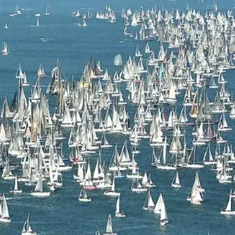

ven 9 ott
Barcolana 58 - eventi in piazza
VENERDI 9 OTTOBRE ore 15.00 Palco Piazza Cavana DRUM CIRCLE RITMOCENTRO Il Drum Circle è un divertente evento ritmico per tutti. Viene abbattuta qualsiasi barriera di età, genere, capacità. L'approccio alla musica è intuitivo e istintivo, guidato dal facilitatore. In pochi…
 Indicazioni
Indicazioni
- Costi e prenotazioni
- Costo non indicato · Prenotazione non indicata
- Programma
- Programma da verificare. Apri la fonte ufficiale per orari e possibili aggiornamenti.
- In caso di maltempo
- Nessuna indicazione specifica pubblicata.
- Note
- Acquisito automaticamente dalla fonte.
L’EVENTO
Descrizione completa
VENERDI 9 OTTOBRE
ore 15.00 Palco Piazza Cavana
DRUM CIRCLE RITMOCENTRO
Il Drum Circle è un divertente evento ritmico per tutti. Viene abbattuta qualsiasi barriera di età, genere, capacità. L'approccio alla musica è intuitivo e istintivo, guidato dal facilitatore. In pochi minuti un gruppo di persone diventa un'orchestra. INFO: rossignolimarco@yahoo.it. Ingresso libero
ore 16.00 Palco Piazza Cavana
SPAKKAZUC
Una moderna brass band rivisita con brio il suono delle bande popolari, tra repertorio originale ispirato al jazz, improvvisazioni e richiami a danze e melodie contemporanee. INFO: contact@beatwallmanagement.com. Ingresso gratuito
ore 16.30 Piazza Barbacan
ore 17.30 spettacolo itinerante tra Borgo Teresiano e Cavana
CROSSROADS VOCAL GROUP
Canti per le Strade:le vie dei borghi si animano con esibizioni itineranti di canti tradizionali locali. INFO: contact@beatwallmanagement.com. Ingresso gratuito
ore 17.30 Via del Sale/Cavana
MALDOBRIE: ALESSIO COLAUTTI, MARZIA POSTOGNA, ALEKSANDER IPAVEC
Le celebri storie di mare e di terra scritte da autori triestini, tornano in scena vicino al pozzo più caratteristico del borgo. INFO: contact@beatwallmanagement.com. Ingresso gratuito
ore 18.15 Via del Sale/Cavana
MATTEO E. BASTA
Cantautore folk di una città di confine, usa chitarra acustica e forma canzone per raccontare, tra chiarezza e suggestione, personaggi, paesaggi, storie e pensieri. INFO: contact@beatwallmanagement.com. Ingresso gratuito
ore 18.30 Piazza Verdi
LA GRECIA DANZA
Il repertorio del nostro gruppo presenterà danze delle diverse regioni della Grecia continentale delle isole dell'Egeo, del Dodecanneso e delle isole dello Ionio. INFO: comgrots@tin.it. Ingresso libero
ore 19.15 Palco galleggiante Borgo Teresiano Canal Grande
MAURO OTTOLINI OSAKI TRIO SEA SHELL MUSICA PER CONCHIGLIE
Un concerto nato da conchiglie raccolte e trasformate in strumenti sonori. Voci, percussioni e suoni della natura compongono un’esperienza musicale dedicata al mare.
INFO : contact@beatwallmanagement.com
Ingresso gratuito
ore 19.30 Palco Cavana
WHISKEY FACILE
Il gruppo propone un repertorio principalmente di swing italiano, rivisitato e riarrangiato, di autori come Fred Buscaglione, Quartetto cetra, Enzo Iannacci, Paolo Conte, ed un omaggio alla bella canzone Italiana di Domenico Modugno, Milva, Mina e Gabriella Ferri. INFO: contact@beatwallmanagement.com. Ingresso gratuito
ore 20.30 Casa della Musica via dei Capitelli, 3
TRIESTE UKULELE CLUB
Comunità gratuita e aperta a chi ama la musica, suona già o vuole provare l’ukulele. Tra incontri, concerti e flashmob, piccoli strumenti e grande voglia di condividere.
ore 22.00 Palco Piazza Cavana
GIUSEPPE ROSSI OMG
Giuseppe Rossi è un DJ con una lunga traiettoria nel circuito underground locale e non solo. Membro del collettivo OHMYGOD!, ha condiviso la consolle con artisti di primo piano della scena nazionale e internazionale. Negli anni ha affinato un sound ricercato e dall’anima black in perfetto equilibrio tra House e Techno, proposto con un set 100% in vinile.
Il programma può subire variazioni. Consultare il sito di Barcolana 58
IL PROGRAMMA
Programma e orari
Appuntamenti raccolti dalle fonti elencate. Dove manca un orario, non è ancora disponibile in questa scheda.
Programma pubblicato
- ore 15.00 Palco Piazza Cavana
- ore 16.00 Palco Piazza Cavana
- ore 16.30 Piazza Barbacan
- ore 17.30 spettacolo itinerante tra Borgo Teresiano e Cavana
- ore 17.30 Via del Sale/Cavana
- ore 18.15 Via del Sale/Cavana
- ore 18.30 Piazza Verdi
- ore 19.15 Palco galleggiante Borgo Teresiano Canal Grande
- ore 19.30 Palco Cavana
- ore 20.30 Casa della Musica via dei Capitelli, 3
- ore 22.00 Palco Piazza Cavana
INFORMAZIONI UTILI
Prima di partire
- Controllare la fonte prima di partire.
ORGANIZZAZIONE